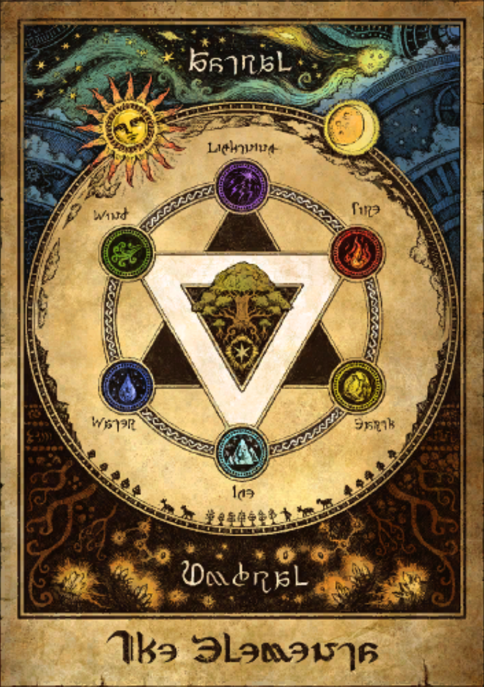

Attendance
- Deudalaphon
- Halmarut
- Emmerololth
- Pashtarot
- Altima
- Mitron
- Loghrif
- Fandaniel
Absences: Igeyorhm and Nabriales are missing. The other 4 absences are expected.
Unfinished Business from Last Meeting
The chaos that had been occurring in Pandæmonium has finally subsided. The surviving keywards will work with the Convocation to determine what happened.
Aether Current Stagnation
Fandaniel presented his theory regarding the rampancy of creation magicks. He notes that areas in which this phenomenon occurs also have particularly weak aether currents.
When the aether flow in an area has halted, that aether gradually rots and cannot be properly used for creation magicks.
He shows that places in which the magicks still work, such as Akadaemia Anyder, have a strong flow of aether. Mitron concurs, since his ichthyology research there has not been affected.
Pashtarot offers to run the theory by the researchers at Anamnesis Anyder. Deudalaphon offers to come with.
Elemental Effects on Aether
An elemental chart is brought out by Altima.
Loghrif explains that the Astral-aligned elements of wind, lighting, and fire are associated with activity, while the Umbral-aligned elements of water, ice, and earth are associated with passivity.
An outside force causing the aether in an area to be pulled into an Umbral state would lead to stagnation, Halmarut surmises.
Emmerololth will research the effects of Astral-aligned elements on stagnated aether along with Fandaniel.
Miscellaneous
The restoration of Ktisis Hyperboreia has been completed. It is now up and running at full efficiency.
An aetheryte has been constructed at the Macarenses Angle at the request of numerous Amaroutines.
Meeting Recording
Video Recording: